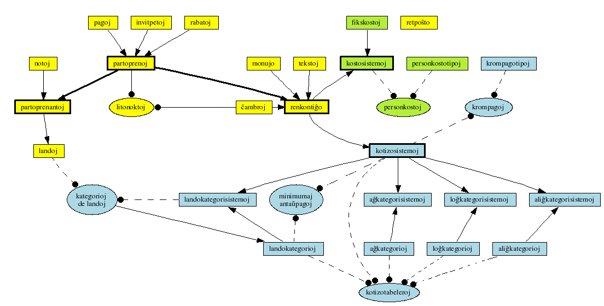
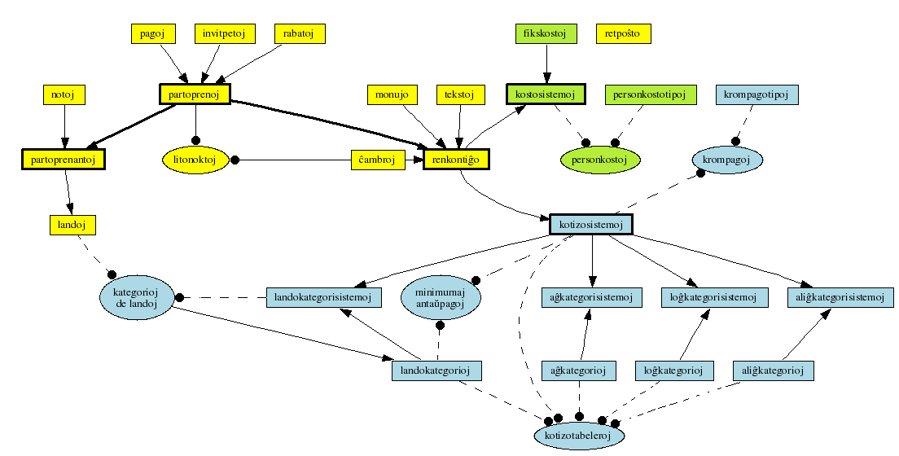

Ŝanĝoj de la programo
Jen listo de ŝanĝoj inter la unuopaj SVN-versioj.
Puraj ŝanĝoj de komentoj aŭ similaj etaĵoj ne estas listigitaj.
Ĉi tie aperas nur ŝanĝoj de la ĉefa programo (/programo/ en SVN)
kaj de la IS-specifaj variantoj, ne ŝanĝoj de la retpaĝo. Pro tio
estas kelkaj truoj en la SVN-revizo-numeroj.
Aktuala revizo ($Revision$)
- iloj/tcpdf_1_53_0_TC034_php4.zip -> tools-org/tcpdf_1_53_0_TC034_php4.zip
- ŝovo de dosiero, por povi ĝin forigi el la labora kopio, kiun mi havas,
kaj tiel ŝpari iom da spaco.
Revizo 126
- cxambrostatistiko.php
- korekto de tajperaro, aldono de tuta partoprenantonombro.
- gxenerala_sercxo.php
- tajperaroj: prilaborita -> prilaborata, sercxtabellinio -> sercxelektolinio
(kaŭzis stultan erarmesaĝon)
- iloj/iloj_cxambroj.php
- erara voko de metodo en (ebla) null-objekto - nun kun taŭga kondiĉo.
Revizo 125
- sercxoj.php
- Ebleco redakti la meta-datumojn (nomo + priskribo) de
daŭrigita serĉo.
- administrado.php
- Forigis la (neniam uzitan) eblecon sendi retajn duajn konfirmilojn.
- gxenerala_sercxo.php
- + ISO-kodo de landoj
- akceptado-fino.php, akceptado-datoj.php
- kelkaj reformatadoj de la akceptadaj instrukcioj
- doku/farendajhoj.html
- Aktualigo - kio estas intertempe farita
- finkalkulado.php, iloj/mangxkuponoj.php
- Uzo de TCPDF kaj rilataj ŝanĝoj.
- iloj/kreu_nomsxildojn.php
- iloj/kreu_adresaron.php, iloj/kreu_adresaron_tcpdf.php, iloj/mangxkuponoj.php, iloj/kreu_akceptofolion.php
- Uzo de $prafix-relativaj dosierlokoj
- iloj/kreu_adresaron_tcpdf.php
- Adapto de formato
- iloj/iloj_cxambroj.php
- Korekto de eraro en la kalkulo de mankantaj litoj
Revizo 124
- partrezultoj.php
- sendado de duaj informilo nun estas notata en la datumbazo.
- administrado.php
- Uzu unikodan varianton de la konfirmilo (ĉiam - ni ja ne devas sendi
ĝin per retpoŝto).
- specialaj_skriptoj/sendu_duan_informilon.php
- nova dosiero por sendado de duaj informiloj. (Necesas adaptoj en la programkodo antaŭ uzi ĝin.)
- partoprenkontrolo.php
- forigo de Debug-teksteldono
- krompagotipo.php, iloj/iloj_kotizo_kategorioj.php
- nun kun loka nomo de krompagotipoj kaj aliĝkategorioj.
- doku/kotizosistemo.sql
- Nova: La strukturo kaj enhavo de la kotizo-sistem-relevantaj tabeloj.
- doku/aligilo-tabeloj.sql
- Aktuala versio de la datumbaz-strukturo.
- konfiguro/kondicxoj.php
- Adapto al iu ŝanĝo de la kategorioj-strukturo.
- iloj/iloj_kotizo.php
- Pli kompleta dulingveco de la kotizo-tabelo.
- iloj/kreu_konfirmilon.php
- Adapto al TCPDF-specialaĵoj, uzo de $prafix-relativaj dosierlokoj, forigo de nenecesaj kodo-partoj
- iloj/diversaj_retmesagxoj.php
- korekto de dosiernomoj.
- iloj/iloj_kostoj.php
- korekto de malĝusta foreach.
Revizo 123
- iloj/iloj_konfirmilo.php
- novaj funkcioj por krei la retmesaĝan tekston por la dua konfirmilo.
- iloj/diversaj_retmesagxoj.php
- nova funkcio por sendi la duajn konfirmiloj
- partrezultoj.php
- Uzo de la novaj duaj konfirmiloj anstataŭ la malnovaj
- sxablonoj/dua_konfirmilo_retposxto_de.txt, sxablonoj/dua_konfirmilo_retposxto_eo.txt
- novaj dosieroj: enhavo de la teksto por la dua konfirmilo-mesaĝo.
- doku/tekstoj.php
- Nova teksto: konf2_dua-informilo-teksto
- iloj/retmesagxiloj.php
- nova metodo
latin1a_teksto_estu, kaj ties voko de
auxtomata_teksto_estu, depende de la enhavo.
Krome sendu() nun sendu() printas post la sendado, kien
ĝi sendis.
- kreu_konfirmilon.php
- splitiĝo de
bezonas_unikodon, por povi testi ankaŭ
tekstojn, ne nur partoprenantojn.
La kreu_konfirmilon()-Metodo nun ankaŭ povas preni jam pretajn
objektojn, anstataŭ krei tiujn mem.
Revizo 122
- menuo.php
- forigo de elprovejo
- administrado.php
- Aldono de pluraj ligoj al subdosierujoj (+ iom da reformatado)
Revizo 121
- enspezokalkulado.php
-
Uzo de
tabela_elektilo() anstataŭ elektilo_simpla en apartaj tabeleroj,
ebleco elekti kostosistemon.
...
- iloj/iloj_kostoj.php
- nova Klaso kostokalkulilo, kun pluraj metodoj.
- iloj/objekto_partopreno.php
- Nova metodo
partopennoktoj().
- iloj/objekto_renkontigxo.php
- Nova metodo
renkontigxonoktoj().
- cxambrostatistiko.php, cxambroj.php, iloj/iloj_kotizoj.php, iloj/mangxkuponoj.php, iloj/iloj_cxambroj.php, iloj/iloj_kostoj.php
- Uzo de
...->renkontigxonoktoj() aŭ
...->partoprennoktoj() anstataŭ rekta
kalkulu_tagojn(...->datoj['de'], ...->datoj['gxis']).
Revizo 120
- iloj/iloj_kotizo_kategorioj.php
- Adapto de
enkodu_kategoriojn() al la
ŝanĝoj en Revizo 117 (kiuj kaŭzis ne-funkcion de la
kalkulado en enspezokalkulado.php).
Revizo 119
- iloj/iloj_sercxo_analizo.php
- certigas konekton de invitpetoj al aliaj tabeloj.
Revizo 118
- iloj/objektoj.php, invitpeto.php
-
La ŝanĝo en revizo 107 montriĝis problema.
Pro tio mi nun aldonis apartan funkcion
skribu_kreante_kun_ID(), kiu
konservas la ID, kaj nun uzas tiun funkcion (anstataŭ skribu_kreante())
por la invitpetoj.
Revizo 117
- administrado.php
- Rekta aliro al tekstoj.php (ne plu necesas iri tra renkontigxo.php)
- doku/tekstoj.txt
- Novaj tekstoj: konf2-sendanto-adreso, konf2-kunportu-reston.
- iloj/iloj_kotizo.php, iloj/iloj_kotizo_kategorioj.php
- Kategorioj-listoj nun enhavas kaj la identigilon de la kategorio,
kaj iun liberan tekston (povas esti dulingva) por klarigi ĝin. Pro
tio necesis adapti plurajn funkciojn.
- iloj/iloj_kotizo.php
- La kotizokalkulilo nun memoras krom la nombro de partoprennoktoj
tekston pri la fakto, ĉu estas tuttempa aŭ parttempa partopreno.
Tiu estas uzata en la kotizokalkulo-tabelo.
La interna formato de la kotizokalkulotabelo iom ŝanĝiĝis, inter
alie por ebligi tradukojn.
La PDF-kreila parto multe ŝanĝiĝis.
- iloj/iloj_tekstoj.php
- Ni nun fortranĉas spac-signojn (kaj similaĵojn) fine de tekstoj
antaŭ la uzado, ĉar tiuj estas malfacile videbla dum la entajpado,
kaj povus ŝanĝi la aspekton de la rezulto.
- iloj/kreu_konfirmilon.php
- Entute ni ŝanĝis de Latina-1 al UTF-8.
La adreso de la sendinto venas nun el la datumbazo, ni montros nur
la kotizotabelon (kiu enhavas nun ĉion necesan, ŝajne), ne plu la
antaŭan tabelon. Krome estis kelkaj etaj formatadaj ŝanĝoj.
Revizo 116
- renkontigxo.php
- Elektilo por la kotizosistemo de iu renkontiĝo.
- iloj/iloj_kotizo.php
- Kotizosistemo havas novan funkcion por eltrovi la minimumajn
antaŭpagoj por iu landokategorio.
montru_kotizon() nun uzas du lingvojn (de kaj eo), kaj
la PDF-kreado (por dua konfirmilo kaj por la akceptofolio) nun
parte funkcias. (Estas tamen pripensinde ŝovi tion al alia dosiero.)
- iloj/iloj_kotizo_kategorioj.php
trovu_kategorion() nun ricevas pliajn parametrojn
(kotizosistemon kaj la ĝis nun eltrovitajn kategoriojn) – tion uzas
la aliĝkategorisistemoj.
Aldona funkcio kalkulu_kotizorelevantan_daton() faras ĝuste
tion - kalkulas laŭ la datoj de pagoj, landokategorio ktp. la daton, kiu
validas por la aliĝkategorio.
- iloj/iloj_html.php
- Nova funkcio
tabela_elektilo_db kiel kombinaĵo de tabela_elektilo kaj simpla_elektilo_db.
- iloj/iloj_kotizo_krompagoj.php, konfiguroj/kondicxoj.php
- La krompago-kondiĉoj ricevas kiel plian parametron la kotizokalkulilon
(kiun ili povos demandi pri aldonaj informoj).
- iloj/kreu_konfirmilon.php
-
- Uzo de TCPDF anstataŭ UPDF, por la unikodaj konfirmiloj.
- La dosiero mem estas nun kodita en UTF-8 (germanaj specialaj literoj)
- forigo de
esso().
- Uzo de
Kotizokalkulilo-objekto anstataŭ
Kotizo-objekto.
- Printado de kotizo-tabelo per la kotizokalkulolo. (Necesas forigo
de duoblaj informoj, por ŝpari spacon.)
- iloj/kreu_akceptofolion.php
-
- Uzo de TCPDF anstataŭ UPDF
- forigo de
esso().
- Aldono de
dulingva() kaj trans_eo por
kompatibileco al Konfirmilo (por la kotizotabelo)
- Uzo de
Kotizokalkulilo-objekto anstataŭ
Kotizo-objekto.
- Printado de kotizo-tabelo per la kotizokalkulolo.
- Kelkaj optimumigoj pri la vortumado kaj la formatado.
Revizo 115
- personkostotipo.php
- elekto de kondiĉo el listo anstataŭ entajpado de
PHP-kodo.
- krompagotipo.php → krompago.php
- Ŝanĝo de nomo, elekto de kondiĉo el listo anstataŭ entajpado de
PHP-kodo.
- kategorisistemoj.php, kotizosistemo.php
- ligoj nun al krompagotipo.php (anstataŭ krompago.php)
- konfiguro/kondicxoj.php
- diversaj kondiĉo-funkcioj, parte antaŭe en la datumbazo. Por uzo en
krompagoj kaj personkostoj.
- iloj/iloj_html.php
- ...
- iloj/iloj.php
- voko de konfiguro/kondicxoj.php
- iloj/iloj_kotizo_krompagoj.php, iloj/iloj_kostoj.php
- en la datumbazo nun estas ne plu PHP-kodo, sed nur nomo de
kondiĉo-funkcio. Laŭe estas ŝanĝita la uzo de la
kondiĉo-kampo.
Revizo 114
- iloj/iloj_kotizo.php
- korekto de sintaksaj eraroj.
-
Revizo 113
- partopreno.php
- Ŝanĝo de pluraj aperoj de plurliteraj valoroj al unuliteraj, por
eviti problemojn, ebligo de unulitaj ĉambroj.
- iloj/iloj_kotizo.php
- Korekto de kalkulo de plurnokta (nome tuttempa) krompago.
- iloj/iloj_kotizo_kategorioj.php
- korekto de aliĝkategoridato-kontrolo
- iloj/objekto_partopreno.php, gxenerala_sercxo.php, partsercxo.php
- adapto al unulitaj ĉambroj
- iloj/iloj.php
- Ŝanĝo de la datumbazdemandoj en
rajtas() kaj
kontrolu_entajpanton() por ne inkludi la pasvorton
en la datumbazdemandon (sed anstataŭe en la rezulton), por ke ĝi
ne montriĝu en debug- kaj erareldonoj.
Revizo 112
- kostosistemo.php, personkostotipo.php, iloj/iloj_kostoj.php, kostosistemoj.php
-
Novaj, komenco de la implementado de "kostosistemo", por kalkuli kostojn de iu
renkontiĝo (kaj kompari kun la enspezoj).
- kotizoj.php
- Ligoj al kostosistemoj.php
- krompago.php, kategorisistemoj.php, iloj/iloj_kotizo.php
- Aldono de ebleco de laŭnokta krompago.
- kategorisistemoj.php
- Listo de personkostotipoj.
- iloj/iloj_kotizo.php
- Uzo de iloj_kostoj,
- iloj/iloj_html.php
- Korektis erareton en
elektilo_simpla.
Revizo 111
Revizo 110
- administrado.php, gxenerala_sercxo.php, partsercxo.php,
partoprenkontrolo.php, cxambrostatistiko.php, partopreno.php,
iloj/objekto_partopreno.php, iloj/iloj_mesagxoj.php
- La kampo kunmangxas de partopreno nun havas la tri eblecojn
J (kunmanĝas sen krompago), K (krompagas por kunmanĝi) kaj N (ne krompagas).
Pro tio en pluraj dosieroj necesis adaptoj..
Revizo 109
- krompago.php
- Nun uzebla: kreado kaj redaktado de krompago-tipoj.
- kategorisistemoj.php
- nun kun enhavtabelo kaj listo de krompagotipoj.
- stilo.css
- ŝanĝitaj spacoj kaj koloroj por la kotizotabeloj.
- iloj/iloj_kotizo.php
-
La granda kotizotabelo nun subtenas titolon.
Dum la kalkulado de parttempaj kotizoj ni fortranĉas
la post-komajn ciferojn.
- iloj/iloj_html.php
-
Nova funkcio
tabela_elektilo.
- iloj/iloj_kotizo_krompagoj.php
-
listu_cxiujn_krompagotipojn() nun ankaŭ
subtenas aliajn kondiĉojn.
- enspezokalkulado.php
- Kontrolo, ĉu ĉiuj partoprenantoj aperas en la tabelo.
anstataŭigo de la granda tabelo (kun pluraj informoj) per pluraj
tabeloj (kun po unu informo).
- kotizosistemo.php
- korekto de cimo
$tipo anstataŭ $kromtipo
rezultis, ke plurfoje la sama tipo estis montrita en la tabelo por
aldoni novan krompagon.
Revizo 108
Revizo 107
- kategorisistemo.php
- (Nova) Redaktilo por kategorio-sistemoj kaj la unuopaj kategorioj.
(Parte uzas novajn funkciojn en iloj/iloj_kotizo_kategorioj.php.)
Per ĝi ankaŭ eblas kopii tutajn kategoriosistemojn (inkluzive de
ĉiuj kategorioj).
- iloj/iloj_kotizo_kategorioj.php
- Novaj metodoj:
Kategoriosistemo::katKlasnomo() - nomo de la respektiva kategorio-klaso.Kategorisistemo::kopiu_kategoriojn_el() kaj Kategorio::finu_kopiadon_el() - por kopii post kreado de nova kotizosistemo ĉiujn kategoriojn (kun variantoj en subklasoj) Kategorisistemo::mangxu_aliajn_kategorisxangxojn() -
por ke subklasoj (landokategorisistemo) povu prilabori ŝanĝojn de la
landokategorioj.Kategorisistemo::kreu_kategorikreilon kreas formularerojn
por krei novan kategorion - en subklasoj estas variantoj de tio.Landokategorio::listu_landojn() por krei liston de iu
informero pri ĉiu lando, kiu estas membro de tiu kategorio.
Krome Kategorisistemo::listu_kategoriojn() (kun
Kategorisistemo::kreu_kategoritabelkapon() kaj
Kategorio::kreu_tabellinion()) nun subtenas alternative
formaton, kie eblas redakti la kategoriojn. (En subklasoj ekzistas
variantoj de tio.)
- kategorisistemoj.php
- Ligoj al kategorisistemo.php, por redakti kaj krei novajn sistemojn,
adaptigo al la ŝanĝoj en iloj/iloj_kotizo_kategorioj, ligoj al
kotizosistemoj.php kaj kotizoj.php.
- stilo.css
- iom da koloro por la kotizotabelo kreita de
Kotizosistemo::metu_kotizotabelon().
- landoj.php
- Kosmetikaj ŝanĝoj, aldono de ISO-3166-1-kodo.
- kotizosistemo.php
switch($_REQUEST['sendu']) anstataŭ pluraj if.
Ebleco redakti krompagojn, kaj la minimumajn antaŭpagojn (laŭ
landokategorio). Aldoniĝis parttempdivisoro al la kotizosistemo.
Finfine aldoniĝis ligoj al aliaj dosieroj.
- iloj/iloj_kotizo.php
Kotizokalkulilo nun kalkulas ankaŭ la parttempan kotizon.- iloj/iloj_sql.php
datumbazsxangxo() havas alternativan simpligan
parametron (eblas uzi $id anstataŭ array("ID" => $id))- iloj/iloj_html.php
tabelentajpejo nun uzas <label>.
Nova funkcio tabela_kasxilo() por krei tabelliniojn kaj
samtempe memori iun valoron.- iloj/objektoj.php
skribu_kreante() nun metas ID=0 por krei novan objekton (kaj
aŭtomata kreado de ID en la datumbazo). (Poste rigardante, tio
kreas problemon por invitpeto,
kiu ne havas propran ID, sed uzas tiun de partopreno.)
Krome aldono de kelkaj mysql_free_result() por ŝpari iom da spaco.
Revizo 106
- menuo.php
- ligo al kotizoj.php anstataŭ kotizo.php
- kotizoj.php
- (nova) simpla superrigarda paĝo pri la diversaj kotizo-rilataj paĝoj.
- iloj/iloj_kotizo.php
kotizosistemo->metu_kotizotabelon() reverkita, por fari
la bazan laboron per transdonita funkcio. Tiel eblas reuzi la saman
tabelon en enspezokalkulado.php.- iloj/iloj_kotizo_kategorioj.php
- apartaj funkcioj por kodigi/malkodigi kategorio-liston en koncizan
formon (ekzemple
1=4=56=2), ekzemple por uzo en
formularero-nomoj aŭ array()-ŝlosiloj. (Tiu kodado antaŭe estis farita
dise en iloj_kotizoj.php kaj kotizosistemo.php, kaj nun evidentiĝis, ke ni
bezonos ĝin en pliaj lokoj.)
- enspezokalkulado.php
- Preskaŭ tute nova ... programo por kalkuli la eblajn enspezojn, se
oni uzus iun kotizosistemon kun la partoprenantoj de iu renkontiĝo,
dividitaj laŭ kategorioj.
- iloj/iloj_html.php
- korekto de cimeto en
entajpejo() (type='text'
mankis - sed ŝajne tio estas la defaŭlto por <input />).
En elektilo_simpla_db() nun du pliaj parametroj estas opciaj -
montriĝis, ke "ID" kaj "nomo" estas sufiĉe taŭgaj defaŭltoj.
- iloj/iloj.php
- Nova funkcio
debug_echo(), kiu eldonas la argumenton, se estas
en DEBUG-moduso (DEBUG == true), alikaze nenion faras.
Revizo 105
- invitpeto.php
- Ligo al la partrezultoj.php (de sama partopreno),
Reen-ligo per
$_SESSION['sekvontapagxo'].
- gxenerala_sercxo.php, iloj/iloj_sercxo_analizo.php
- Aldono de la invitpeto-tabeloj, cimkorekto ĉe notoj
- sercxoj.php
- Korekto de cimo (priskribo nomiĝis nomo)
- iloj/iloj_sercxo_html.php
- nova parametro
$titolo por sercxtabellinio()
kaj sercxelektolinio(), por povi ŝanĝi la aspekton de
la tabelkapoj.
- iloj/iloj_sercxo_konservo.php
- kelkaj status-eldonoj, kaj uzo de
$_SESSION['sekvontapagxo'],
se oni malkonservis serĉon.
Revizo 104
- iloj/tcpdf_php4/fonts
- Forigo de la subdosierujoj
old (malnovaj, neunikodaj tiparoj)
kaj ttf2ufm (programo por produkti la tiparojn el alia
formato). (Tiel la tuta programo iom malpligrandiĝas.)
Revizo 103
Revizo 102
- datumbazstrukturo.dot, strukturo-kotizosistemo.dot
-
 
Diagramo de la datumbazstrukturo sen kaj kun la tabeloj de la
nova kotizosistemo.

Diagramo de la datumbazstrukturo sen kaj kun la tabeloj de la
nova kotizosistemo.
Revizo 101
Nova kotizokalkula sistemo, kun facile ŝanĝebla kotizosistemo.
(Ĝi ankoraŭ ne tute pretas, sed jam povas kalkuli la sistemon
en simplaj kazoj.)
- partrezultoj.php
- Voko de la nova kotizokalkulo paralele al la malnova (por
kompari la rezultojn).
- iloj/iloj.php
- uzado de
iloj_kotizo.php
- kotizosistemoj.php, kotizosistemo.php, kategorisistemoj.php,
iloj/iloj_kotizo.php, iloj/iloj_kotizo_kategorioj.php,
iloj/iloj_kotizo_krompagoj.php
- novaj dosieroj por trakti kotizosistemojn, kategoriojn (kaj -sistemojn),
krompagojn ktp.
- enspezokalkulado.php
- Nova dosiero: kalkulado de la planataj enspezoj, se iu kotizosistemo estus uzata. (ankoraŭ farenda)
- krompago.php
- Nova dosiero: redaktado de krompago-tipoj. (ankoraŭ farenda.)
- doku/datumbazstrukturo.dot
- Skemo de la datumbazstrukturo (sen la kotizosistemo-tabeloj).
- doku/strukturo-kotizosistemo.dot
- Skemo de la datumbazstrukturo kun la kotizosistemo-tabeloj.
Revizo 100
- iloj/iloj_html.php
- korektita cimo en
simpla_entajpejo(),
novaj funkcioj tabel_entajpbutono(),
elektilo_simpla() kaj elektilo_simpla_db
- iloj/iloj.php
- implementado de
array_combine el PHP 5 por PHP 4
- iloj/objektoj.php
- cimkorekto en
skribu_kreante().
Revizo 99
- specialaj_skriptoj/sendu_varbmesagxon.php
- Teksto de la varbmesaĝo sendita la 27an de oktobro.
Revizo 98
- akceptado-datoj.php, akceptado-tejo.php, akceptado-kontroloj.php, akceptado-pago.php, akceptado-lokaasocio.php, akceptado-cxambro.php, akceptado-fino.php, iloj/iloj_akceptado.php
- Restrukturitaj paĝoj de la akceptado-proceduro: supre la instrukcioj,
sube la datumoj por prilabori (laŭ propono de Rolf)
- stilo.css
- Pluraj aldonaj stilaĵoj por la akceptado-proceduro.
Revizo 97
- partrezultoj.php
- Indiko, ĉu la ĉambroj por tiu aliĝo sufiĉas.
- iloj/iloj_cxambroj.php
- Nova funkcio eltrovu_litomankon(), kiu redonas liston de noktonumeroj, en
kiuj mankas lito.
Revizo 96
- notoj.php
- korekto de sintaksaj eraroj, kiuj aldoniĝis en Revizo 55.
- nova_teksto.php
- Pluredaktado de tekstoj post ŝanĝo aŭ kreado nun eblas,
krome pluraj etaj eraroj estis korektitaj.
Revizo 95
- stilo.css
- Pli bona aspekto por la paŝolisto, laŭ proponoj de Rolf.
- route.php, menuo.php
- Tuja salto al la akceptado-proceduro, se la elektita persono aliĝis
al la aktuala renkontiĝo, ni estas en surloka moduso kaj tiu persono
nek malaliĝis nek jam alvenis.
- iloj/objekto_partopreno.php
- mankanta
break;, kiu kaŭzis misan eldonon.
- iloj/iloj.php
- Korektis implementadon de
http_redirect.
Revizo 94
- akceptado-lokaasocio.php
- Implementado de la ago de la butono (nome ŝanĝo de la respektiva ecoj de
partopreno)
- akceptado-fino.php
- korekto de cimo.
Revizo 93
- iloj/tcpdf_php4/
- Nova biblioteko tcpdf (versio por PHP 4), kiu estas variaĵo de nia
FPDF/UFPDF, kaj ne havas la saman problemon (ke č iĝas Ċ –
salutonjn al Marek!). Provizore ĝi estas
uzata nur de la adresaro-kreilo, sed mi iom post iom eble ankaŭ ŝanĝos
aliajn PDF-uzantojn al ĝi.
- iloj/kreu_adresaron_tcpdf.php
- Varianto de kreu_adresaron.php, uzante TCPDF anstataŭ UFPDF.
- administrado.php
- Uzas nun kreu_adresaron_tcpdf.php anstataŭ kreu_adresaron.
Revizo 92
- iloj/kreu_akceptfolion.php
- aldono de TEJO-kotizo, ŝovo de GEJ-kotizo kaj linioj.
Revizo 91
- konfiguro/objektoj_kotizo-malnova.php
- forigita (iu malnova versio de objektoj_kotizo.php)
Revizo 90
- iloj/fpdf/fpdf-manual-de.pdf
- Germana versio de la dokumentaĵo pri FPDF, kopiita de
www.fpdf.org.)
Revizo 89
- gxenerala_sercxo.php
- korekto de ligo
- nova_teksto.php
- diversaj erarkorektoj
Revizo 88
Revizo 86
- akceptado-pago.php, akceptado-fino.php
- Tute novaj.
Revizo 85
- akceptado-datoj.php
- Nun kun kontrolo, ĉu la akceptoto jam alvenis aŭ malaliĝis antaŭe.
Revizo 84
- farendajhoj.html
- La listo de taskoj antaŭe origine
trovebla en tiu ĉi dosiero, nun en propra dosiero kaj aktualigota, kiam
io estos farita.
Revizo 83
Revizo 82
Mi trarigardis la aperojn de TODO:, forigis
faritaĵojn, markis tiujn, kiuj estas farendaj antaŭ la sekva IS
per TODO!:, kaj survoje plurloke faris
aliajn plibonigojn (kaj dokumentadajn ŝanĝojn).
Urĝaj taskoj:
- akceptado-datoj.php
- Alvenkontrolo
- akceptado-pago.php, akceptado-fino.php
- Tute farenda
- akceptado-cxambro.php
- Pripensu, ĉu ni aŭtomate disdonu (rezervitan) ĉambron,
aŭ ĉu tio estu farenda en tiu ŝtupo.
- stilo.css
- Pli bona koloro por la paŝolisto, elprovo de formulareto-ŝanĝo
- nova_teksto.php
- Pluredaktado de tekstoj post ŝanĝo aŭ kreado
- partrezultoj.php
- Montru mankon/nemankon de litoj por junulargastoj
- doku/dokumento.txt
- komparu la liston pri sesio-variabloj kun tiu en
doku/variabloj.txt.
- doku/dosierlisto.txt
- Aktualigo necesas ...
- sercxoj.php
- Ebligu redaktadon de serĉoj.
- administrado.php
- Rerigardu la punkton pri la duaj informiloj-mesaĝoj.
- menuo.php
- "Akceptu"-butono aŭ simile (nur surloke)
- partopreno.php
- invitletero-limdato (en teksto) venu el datumbazo
- finkalkulado.php
- Unikodigo de la nomoj, ĝusta kalkulo de kotizo por malaliĝintoj
- iloj/kreu_nomsxildon.php
- Rerigardu kaj adaptu al nova IS
- iloj_konfirmilo.php
- traduku "vi mendis ... ĉambron".
- iloj_mesagxoj.php
- kreu novajn funkciojn por ĉio.
- iloj/kreu_konfirmilon.php
- atentu pri aktuala adreso (eble el datumbazo/konfiguro),
pripensu pli bonan tekston pri "kunportu la reston al IS",
rerigardu la ĉambrosituacion
- iloj/iloj_sercxo.php
- Elprovu "en la menuon"-ligon
- iloj/kreu_akceptofolion
- Enmetu kampojn por TEJO-kotizo kaj TEJO-rabato.
Aliaj ŝanĝoj
- iloj/iloj_html.php, partrezultoj.php, landoj.php
- ligu_butone() nun kun plia varianto (kun ebleco doni pliajn variablojn)
- landoj.php
- korekto de la nomo de la ŝanĝu/aldonu-butono
- statistiko.php
- ligoj nun nur al aliaj versioj de la tabeloj, ne al la aktuala.
- iloj/kreu_konfirmilon_unikode.php, iloj/kreu_konfirmilon_neunikode.php
- forigitaj (nun farita en kreu_konfirmilon.php)
- iloj/kreu_akceptofolio.php
- forigita (nun kreu_akceptofolio.php
- iloj/iloj_akceptado.php
- La kapo nun havas ligon al la partoprenanto-paĝo.
- iloj/iloj_sql.php
- eltrovu_entajpanto() -> eltrovu_entajpanton()
Revizo 81
- stilo.css
- Stiloj por la ĉambro-detalo-tabelo
- cxambroj.php, iloj/iloj_html.php, partrezultoj.php, iloj/iloj_cxambroj.php:
- Nova ĉambro-detalo-tabelo, ŝanĝoj per butono
- akceptado-cxambroj.php
- iom pli ...
Revizo 80
- cxambroj.php
- Reen-ligoj (al $sekvontapagxo aŭ al partrezultoj.php), iometa ordigo
de la kodo, eble plusendo post ŝanĝo de ĉambrotipo.
- akceptado-cxambro.php
- Uzo de $sekvontapagxo por ebligi reiron al tiu paĝo post ĉambroŝanĝo.
Revizo 79
- index.php, iloj/iloj_sql.php, fino.php, komenci.php
- Plibonigita protokolo por ensalutoj (kaj malsukcesoj pri tio),
iomete pli klara rezulto de malsukceso, krome fino.php nun
protokolas la elsalutadon kaj poste plusendas al index.php
anstataŭ inkludi ĝin.
Revizo 78
Revizo 77
- doku/shanghoj.html
- Iom da reformatado.
Revizo 76
- doku/shanghoj.html
- nova nomo de shanghoj.txt. Mi supozas, en HTML-formato estos
pli facile legi poste la dosieron en retumilo ... mankas ankoraŭ
iom da reformatado.
Revizo 75
Diversaj plibonigoj de serĉoj.
- iloj_sercxo_rezulto.php, menuo.php:
- plibonigo de "metu en la maldekstran menuon": eblas nun de la
serĉo doni titolon, kiu aperos super la listo en la menuo.
- sercxoj.php, gxenerala_sercxo.php, iloj/iloj_sercxo_konservo.php,
iloj/iloj_sercxo.php:
- Detaloj pri la serĉo: aldono de titolo, uzo de tio kiel atentigo,
se on enmetas ĝin en la menuon, konservo-nomo kiel defaŭlta titolo.
- sercxrezultoj.php:
- Ebligo de "metu en la menuon" en pluraj serĉoj (kun taŭgaj titoloj)
- iloj/iloj_html.php:
- partoprenanto_elektilo() nun ankaŭ funkcias por serĉoj, kiuj ne donas
renkontiĝo-numeron.
entajpejo(): interne iom restrukturita (sen ŝanĝo de funkcio, espereble)
Revizo 74
Plulaboro pri la nova akceptado-proceduro:
- iloj/iloj_akceptado.php:
- iloj por aŭtomate meti superrigardon pri la
akceptadoproceduro en ĉiu paŝo.
- ligu_sekvan() por produkti ligon al la sekva paŝo
- stilo.css:
- aldonoj por la akceptado-paŝo-listo
- akceptado-{datoj,kontroloj,tejo,lokaasocio,cxambroj}.php
- uzo de ligu_sekvan() anstataŭ individuaj ligoj
- akceptado-tejo.php
- erarkorekto (mankanta break), eldono de teksto post elekto de aliĝo
- akceptado-cxambro.php
- preskaŭ tute nova, sed ankoraŭ ne preta.
- akceptado-{pago,fino}
- ankoraŭ tute malnova, farenda.
Revizo 73
- iloj/iloj_html:
- ligu() nun vokas donu_ligon() anstataŭ fari la saman aferon denove.
Revizo 72
Revizo 70
- partoprenanto.php
- erarkorekto (reen-ligo ne aperis en certaj kazoj)
Revizo 69
- kreu_cxambron.php
- erarkorekto (rimarko ne aperis dum la redaktado de ĉambro)
Revizo 68
- doku/akceptado.txt
- Dokumentado pri la akceptada proceduro (komenco).
Revizo 67
- iloj/iloj_konfirmilo.php
- Unua konfirmilo nun ankaŭ germanlingva.
- doku/tekstoj.txt
- Pliaj tekstoj por la tradukebla unua informilo.
- doku/shablonoj.txt
- Dokumentado de la formato de la ŝablonoj en sxablonoj/.
Revizo 66
- nova_teksto.php, tekstoj.php
- plibonigita trakto de la tekstoj, inkluzive ankoraŭ ne ekzistantaj.
- doku/variabloj.txt:
- Iom pli da dokumentado.
Revizo 65
- iloj/tekstoj.php:
- legilo por doku/tekstoj.php, por facila uzo de la dokumentado
en la programo.
- nova_teksto.php, tekstoj.php:
- uzo de doku/tekstoj.php por priskribo de tekstoj
en la redaktilo.
- doku/tekstoj.txt
- ŝanĝo laŭ kelkaj novaj ebloj (opcioj, kategorio)
Revizo 64
- doku/variabloj.txt:
- Listo de globalaj kaj sesio-variabloj (kaj parte ilia signifo).
Revizo 63
- iloj/traduko/ *:
- Enmeto de la dosieroj de la IS-retpaĝa traduksistemo
(por aliĝilo/aliĝintolisto, ne la cetera retpaĝo),
kiun mi (en partoj, kun la necesaj ŝanĝoj) eble ankaŭ
uzos por la tradukendaj partoj de la aligilo (tekstoj en
retmesaĝoj kaj simile). (Sed intertempe mi ne tiom certas,
ĉu tio estas taŭga ideo.)
Revizo 62
- iloj/objekto_partopreno.php:
- Nova kampo en la partoprenanto-detaloj-tabelo pri la lingva nivelo.
- iloj/diversaj_retmesagxoj.php:
- sendu_invitilomesagxon() nun faras nenion (anstataŭ kaŭzi eraron),
se tiu homo ne petis invitilon.
Revizo 61
(nur en la IS-versio: korektoj de kotizo-kalkulado)
Revizo 60
- transferi.php, partrezultoj.php:
- fiksado de cimo, kiu malhelpis la funkciadon de la butono "Rigardu".
- landoj.php:
- korekto de butono-priskribo (Aldonu -> Ŝanĝu), kelkaj
aldonoj de _REQUEST['...'].
- sxablonoj/unua_konfirmilo_eo.txt, sxablonoj/unua_konfirmilo_de.txt:
- aldono de ŝildnomo, formatado en la germana versio.
- iloj_html.php:
- forigo de kelkaj superfluaj spacoj en generita HTML.
Revizo 59
Revizo 57
- doku/tekstoj.txt
- dokumentado pri la diversaj identifikiloj en la tekstoj-tabelo.
(Ĝi estu poste uzata en la programo mem.) Parte prenita el la
GEJ-vikio (por ke la informo ne restu tie kaŝita).
Revizo 56
Revizo 55
- iloj/iloj_konfirmilo.php:
- uzas novan tekston 'konf1-dissendolisto-eo' kun
atentigo pri la dissendolisto.
- sercxoj.php:
- uzis tenukasxe()/entajpejo()/granda_entajpejo()
anstataŭ la pura HTML, por eviti similajn problemojn
kiel la /////".
- menuo.php:
- uzis nun simpla_entajpejo() anstataŭ pura HTML.
- iloj/iloj_html:
- aldonis htmlspecialchars() en tenukasxe(), por eviti
problemojn kun ' aŭ " en la teksto.
nun vere fiksis la cimon en entajpejo() (kaj same en
simpla_entajpejo(), kiu malebligis la redaktadon
de tekstoj enhavantaj '"' aŭ "'", uzante kelkajn pliajn
htmlspecialchars().
- notoj.php:
- aldonis htmlspecialchars() al kelkaj input-elementoj,
kiuj montras tekston el la datumbazo.
Revizo 54
- partoprenkontrolo.php:
- fiksis cimon kun mankanta/difekta plusendado en
la kazo de redakto de datoj el partrezultoj.php.
Nun la defaŭlta plusendocelo estas partrezultoj.php.
- iloj/iloj_html.php:
- fiksis cimon en entajpejo(), kiu malebligis la redaktadon
de tekstoj enhavantaj '"' aŭ "'".
- iloj/iloj_konfirmilo.php:
- fiksis cimon pri malĝusta priskribo de ĉambrosekso, nun uzas
$partopreno->cxambrotipo() anstataŭ erara propra switch.
- specialaj_skriptoj/sendu_varbmesaĝon.php:
- speciala mesaĝo por IS, sendita la 24an/25an
de aŭgusto 2007.
- doku/shanghoj.txt:
- nova dosiero, kien mi metos la ŝanĝojn laŭ SVN-revizo.
Revizo 53
(Mi komencis tiun liston post revizo 53, do antaŭaj ŝanĝoj
ne enestas.)